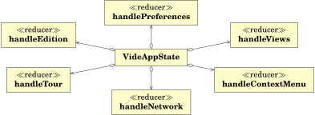
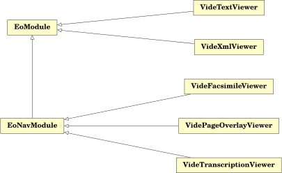

The application is started from app.js and first initializes the main modules:


Then it requests the available editions with dispatch(fetchEditions()). That function creates an action event REQUEST_EDITIONS. That event is fetched by the handleNetwork reducer and initiates the request to get the available editions from the configured server. When the response is received from the server an event RECEIVE_EDITIONS is triggered which is catched by the handleEdition reducer and sets the edition list in the global state.
Now the state contains the current list of available editions.